No Permission Needed.
The most revolutionary thing a person can do today is live authentically.
After ODYSSEY, we discovered who we are. After SUPER NATURE, we found our connection to the world. REVOLUTION is the moment we stop asking for permission — not permission to dress differently, not permission to love differently, not permission to create differently.
This campaign doesn't just follow a calendar. Each phase creates the conditions for the next. Every activation unlocks the one that follows. The timeline is the story. The question creates the invitation. The invitation creates the playground. The playground creates the celebration.
The customer doesn't receive the campaign. They build it.
Campaign Manifesto — 2027
After ODYSSEY, we discovered who we are. After SUPER NATURE, we rediscovered our connection to ourselves, each other, and the natural world. REVOLUTION is the moment everything clicks into place.
It is the moment we stop asking for permission.
Because once you know who you are, and once you understand where you belong, there is only one question left: What is stopping you from being that person?
For many people, the answer is permission. Permission from society. From family. From culture. From strangers.
REVOLUTION is about rejecting that need for approval and embracing the freedom of self-expression.
The Hero Visual
She is not becoming someone new. She is finally becoming who she was always meant to be.
The hero visual captures the exact moment she steps into the most authentic version of herself — a person moving through an invisible dimension, a symbolic space between who she was and who she is becoming.
It feels as though she is shifting into a higher frequency. Not through transformation into someone new, but through the release of limitations, expectations, and the need for external validation.
The glowing worlds surrounding her represent portals into a more authentic state of being — where instinct replaces approval and self-expression replaces conformity.
As she moves through these dimensions, she becomes one with her spirit animal. Not as a literal creature, but as a symbol of her most natural, confident, and uninhibited self.
ODYSSEY was about discovering yourself.
SUPER NATURE was about reconnecting with your true nature.
REVOLUTION is about embodying it.
They are no longer becoming. They are arriving.
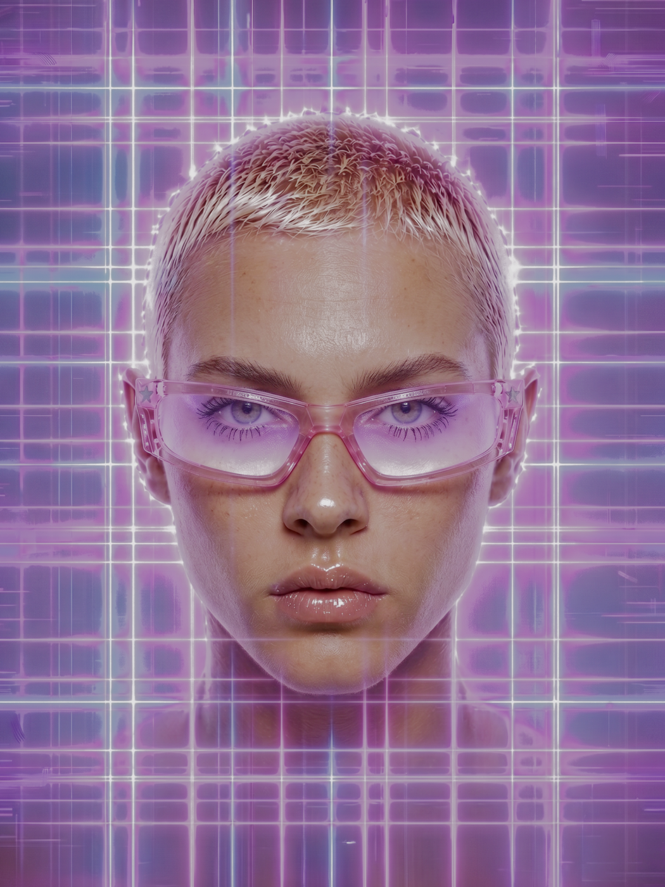
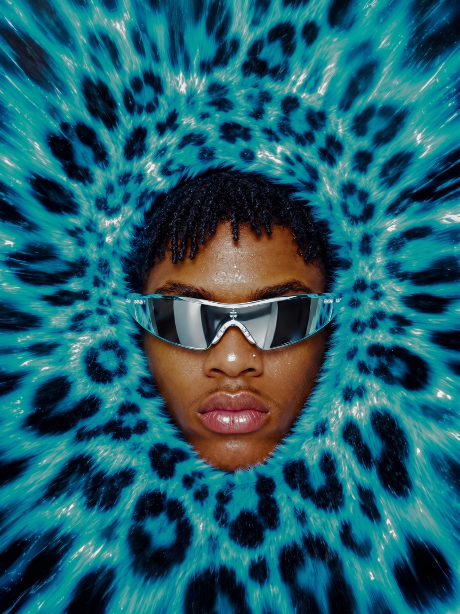
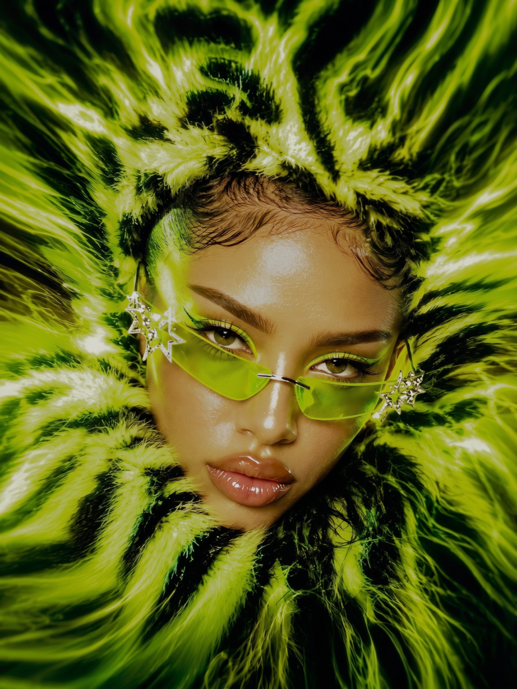
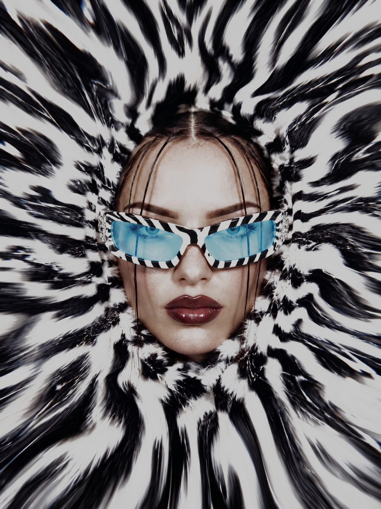
Transition
The tartan world represents the beginning of transformation — the moment between two identities. The glowing pink grid creates the feeling of an invisible dimension, as though the character is moving through a portal into a higher-vibrating version of herself.
Historically, tartan has always been associated with identity, youth culture, and rebellion. Within REVOLUTION it becomes something softer and more optimistic. A rebellion built on creativity, self-expression, and love.
Momentum
The cheetah world represents momentum — confidence in motion. The cheetah never waits for permission. It moves.
The swirling blue energy creates the sensation of being pulled through a tunnel of speed and possibility. It symbolizes ambition, confidence, and the courage to move forward without second-guessing yourself.
Pure Presence
The tiger world represents pure instinct — the moment overthinking disappears and intuition takes over. The electric green energy explodes outward like a force field.
Unlike the cheetah, which represents movement, the tiger represents presence. Owning a room. Being seen. Taking up space unapologetically.
Pure Individuality
The zebra world is the purest expression of individuality. No two zebras have the same pattern. Just as no two people express themselves in exactly the same way.
The monochrome energy strips away distraction and allows confidence to become the focus. You don't need permission to stand out. You simply need to be yourself.
From Punk to Animal Print
The visual language of REVOLUTION began with research into early punk and emo culture. One recurring visual code was the striped sleeve — a recognizable symbol of rebellion, self-expression, and belonging to alternative communities.
For REVOLUTION, that symbol has been reinterpreted. The striped sleeve evolves into oversized animal prints. The spirit remains the same: a visual statement made by people who choose their own path.
The animal prints become extensions of identity. A way of channeling confidence, individuality, and instinct through fashion.
Energy, Not Perfection
The bright neon palette draws inspiration from electronic music culture, festivals, nightlife, internet aesthetics, and the highly visual world Gen Z grew up in. The colours feel energetic, optimistic, playful, and impossible to ignore.
Many lifestyle brands today take themselves too seriously. Everything feels curated. Everything feels controlled. Everything feels perfect. But Gen Z doesn't connect with perfection.
They connect with personality. They connect with authenticity. They connect with brands that are willing to experiment, participate, and have fun. REVOLUTION embraces bold colours, animal prints, charms, stickers, and customization because self-expression should never feel intimidating. It should feel alive.
The four visual worlds become the foundation for four distinct eyewear families. Rather than designing one collection with different colours, each world creates its own design language.
The cover is the first statement. A bright neon-pastel tartan printed with neon pastel inks — bold enough to stop you, considered enough to hold you. It doesn't whisper. It announces.
Inside, the logic shifts. Each spread follows a strict Swiss grid: one page of clean, typeset content; one page given entirely to a single image. White space does the heavy lifting. The neon pastel ink bleeds through as an accent, not a takeover.
The restraint is intentional. A catalogue that goes full Y2K loses the sense of luxury. This one earns it — by knowing exactly when to be quiet. The result feels like something you'd find in a high-end boutique that also has a sense of humour.
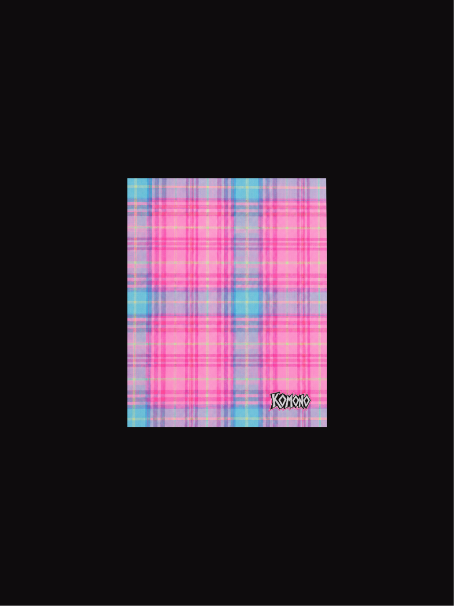
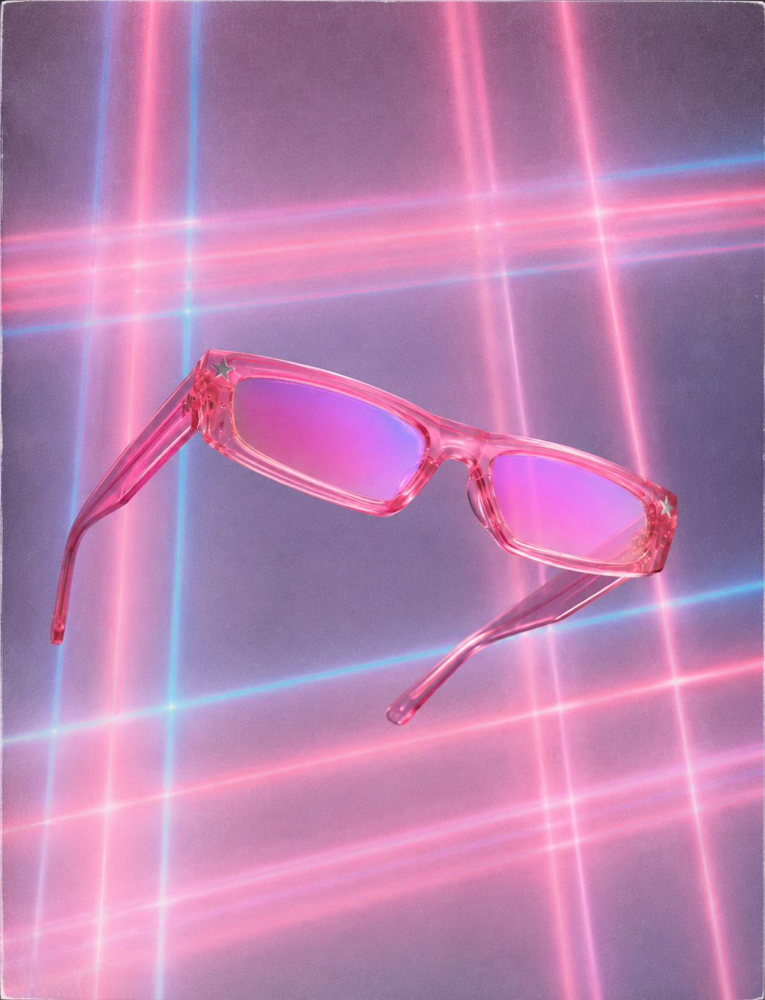
World 01
The most expressive and fashion-forward collection.
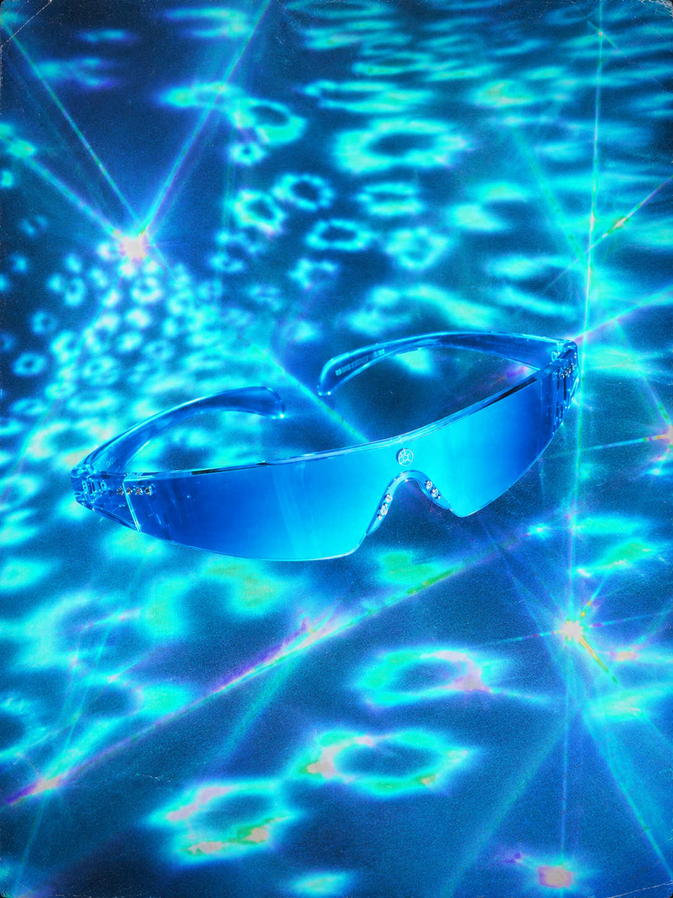
World 02
Built around movement, speed, and confidence.
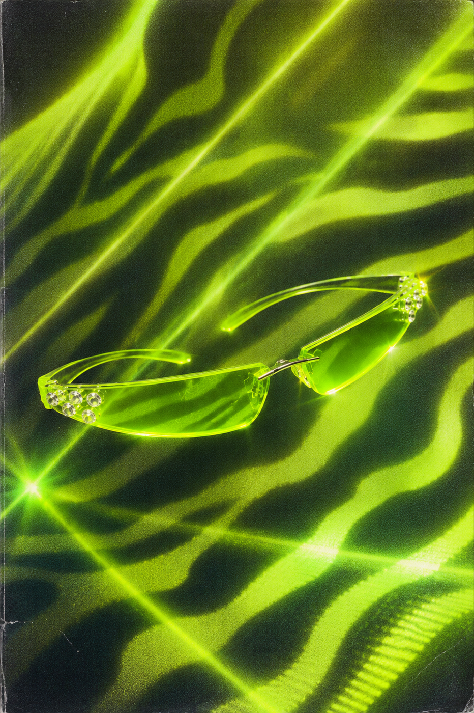
World 03
Built around instinct and self-expression.
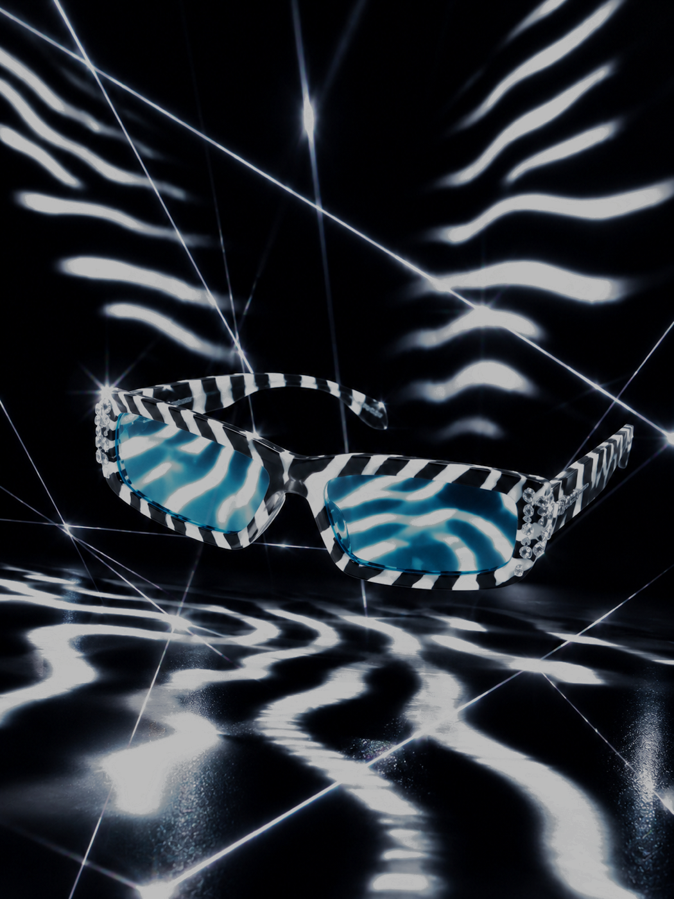
World 04
The purest expression of individuality.
Together, these collections allow people to choose the energy they identify with most. Not based on trends. Not based on approval. But based on instinct.
REVOLUTION is not about changing who you are. It is about removing everything that prevents you from being yourself. Because true revolution isn't about following a movement. It's about having the courage to become yourself — and inspiring others to do the same.
That's how culture changes. That's how communities grow. That's how revolutions begin.
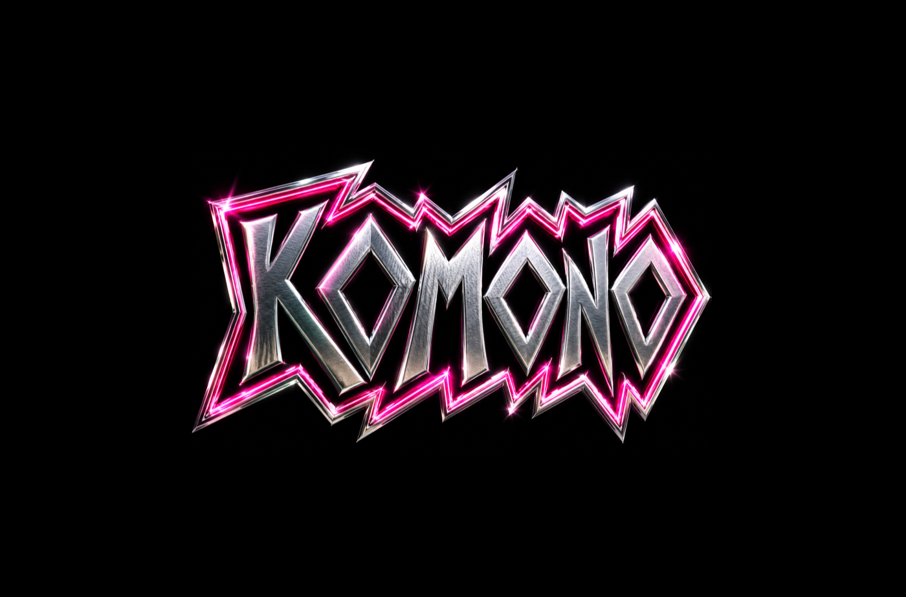
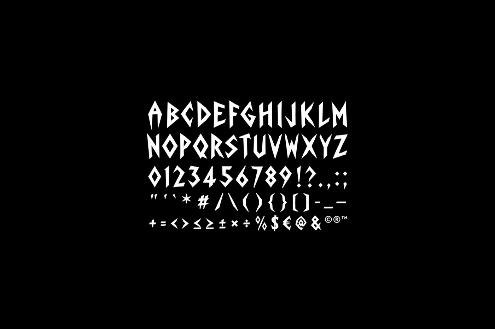
The Logo
Chrome. Metallic. Y2K.
The custom KOMONO logo was created specifically for this campaign. Inspired by early 2000s punk, skate, emo, and alternative culture — but reinterpreted through a more optimistic and contemporary lens. Chrome and metallic effects, neon pink highlights, aggressive stretched letterforms. Imperfect by design rather than overly polished.
The Typeface
Custom. Aggressive. Self-made.
A custom typeface was developed for the campaign — sharing the same DNA as the logo. Sharp, angular letterforms with an imperfect quality that echoes the campaign's message: authenticity over perfection. Built to be used across apparel graphics, campaign materials, and the digital playground.
Design Philosophy
Rebellious. Energetic. Yours.
The elongated K flowing into the O creates tension and movement. The logo should feel rebellious, energetic, and self-made — as though someone made it themselves rather than commissioned it from an agency. That's intentional. The campaign celebrates self-expression, and the identity starts there.
REVOLUTION doesn't arrive from nowhere. It's the third chapter of a campaign trilogy that has been building a philosophy for three years. Each campaign asked a different question about who we are. This one closes the loop.
We set out to discover who we are. The journey was the campaign. Identity was the destination.
We discovered our connection — to ourselves, to each other, to the world around us. Belonging was the subject.
We know who we are. We know where we belong. Now we stop asking for permission to be it. The trilogy completes here.
For Gen Z, No Permission Needed isn't a rallying cry — it's already their baseline. Their open-mindedness, their fluid identity, their refusal to justify themselves: none of that feels radical to them. It's just how they move through the world. That's exactly what makes the title land. It doesn't preach to them. It recognises them. The revolution isn't something they need to join. They've been living it.
Two product categories. Four prints. One shared language. The collection doesn't decorate the campaign — it is the campaign, made wearable.
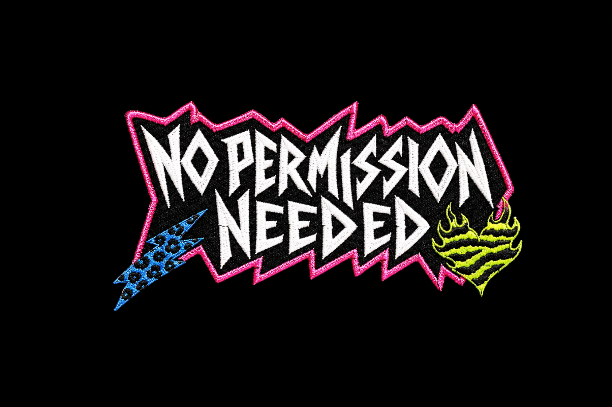
Animal print is not a trend.
It is a visual symbol of authenticity.
"They represent people who no longer hide, no longer blend in and no longer ask for permission to be themselves."
Animal prints were chosen not because they are rebellious, but because they symbolise instinctive self-expression. Throughout history they have been associated with confidence, visibility and individuality.
Within REVOLUTION they become a continuation of SUPER NATURE — carrying the power of nature into human expression. The trilogy closes here. ODYSSEY found identity. SUPER NATURE found connection to the natural world. REVOLUTION wears it.
Each print is a different kind of visibility. The zebra refuses to blend. The tiger moves with total conviction. The cheetah is the fastest version of itself. The tartan is an awakening — to yourself, and to love. Together they make a collection that doesn't ask whether the wearer fits in — it assumes they never wanted to.
Full length. Maximum canvas. The oversized sleeve is the surface — where stickers go, where prints live, where the person shows up. Unisex fit, relaxed.
Same sleeve, shortened body. A different relationship to visibility. The crop is a statement in itself — worn with confidence, not apology. Available in all four prints.
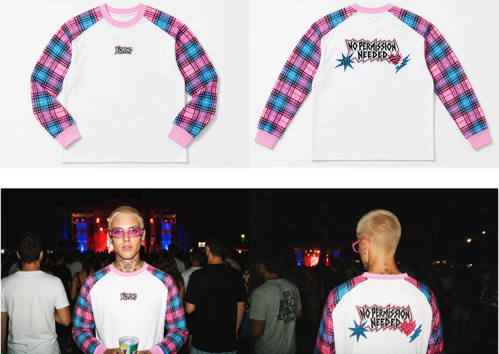
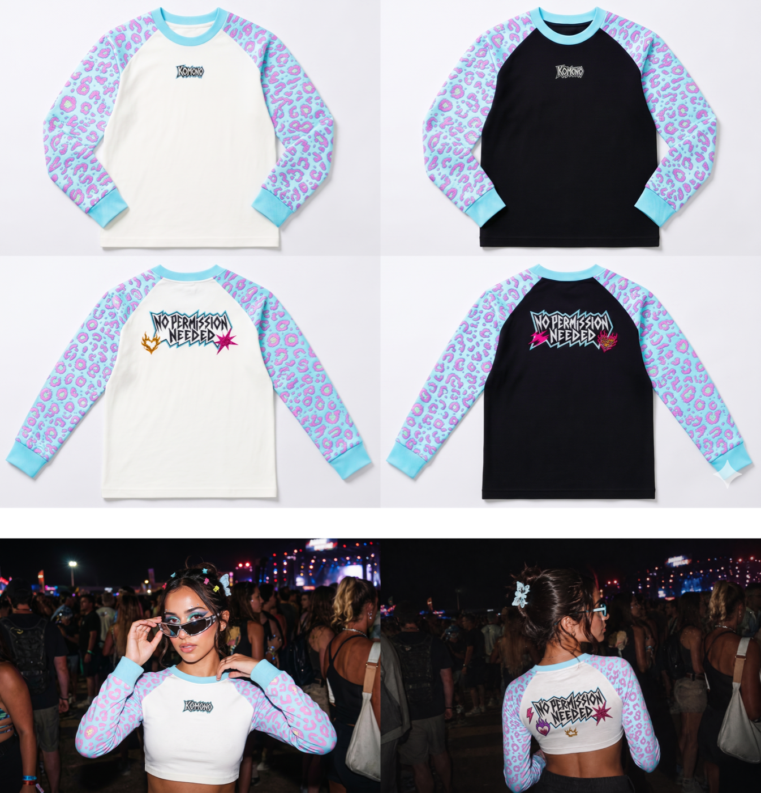
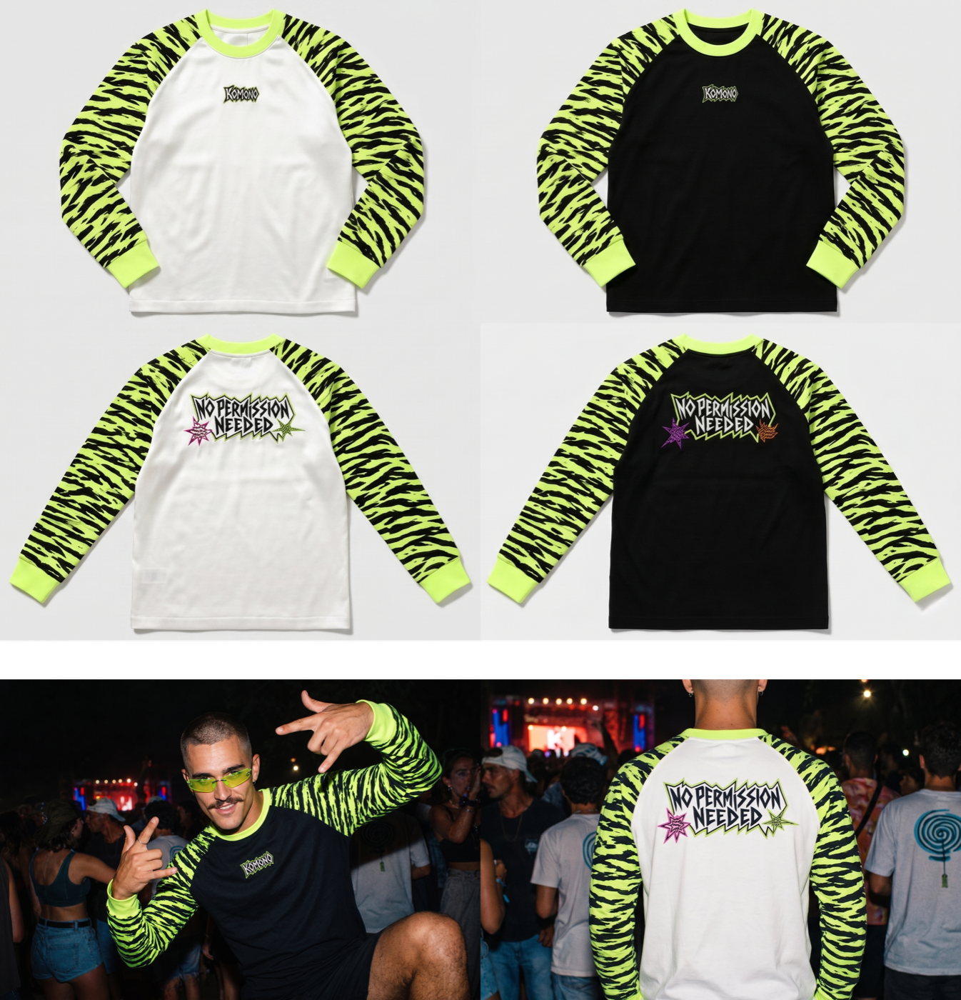
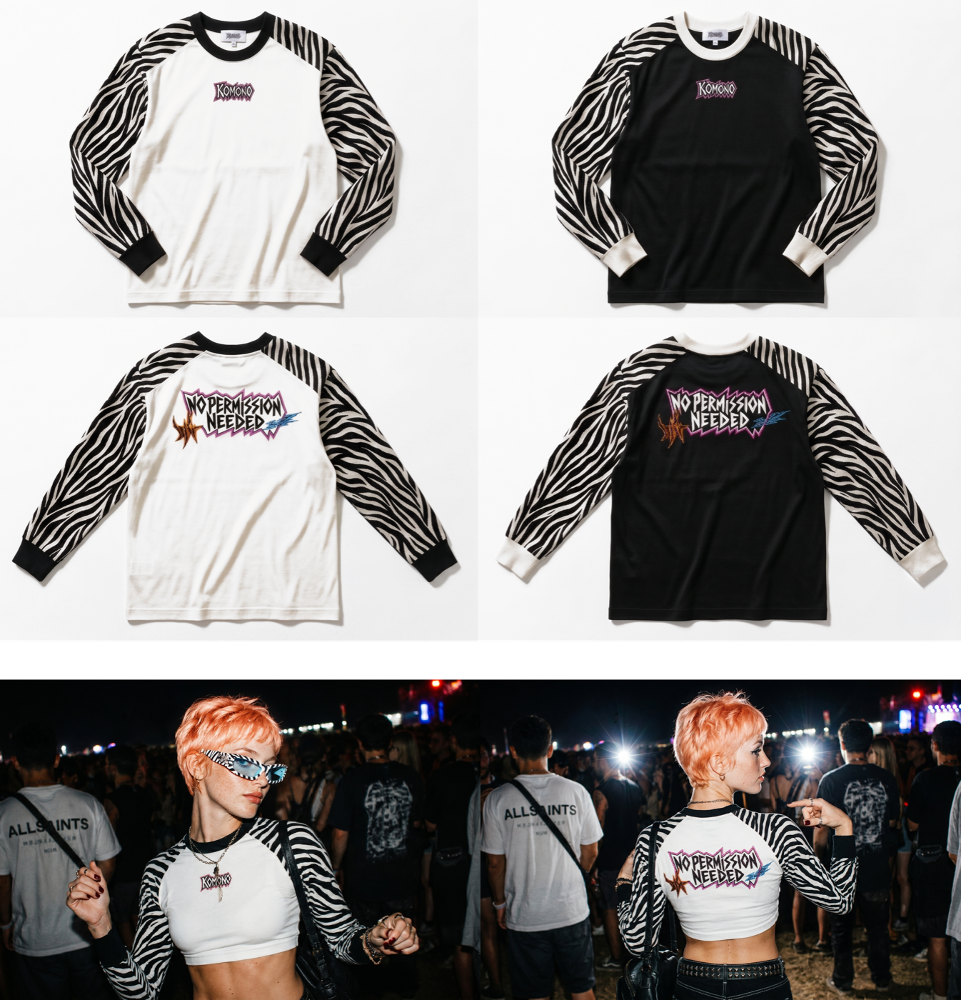
A vision board you wear. Built patch by patch.
The collection includes 25 patches — each with its own print, colour, and visual identity. Their colours and aesthetic energy are rooted in the campaign's manifesto and four visual worlds, but each patch exists in its own playful register.
What makes the system work is that each patch carries a hidden meaning. Not printed on the patch itself — discovered on the sticker sheet inside the Revolution Pack, or revealed on the website at launch. You choose a patch because something draws you to it visually. You find out what it means after.
That discovery is the moment. The combination you build on your shirt becomes your own vision board — a set of intentions you've chosen to carry and wear. Some people pick one and mean it completely. Some layer five. No combination is wrong. No two shirts end up the same.
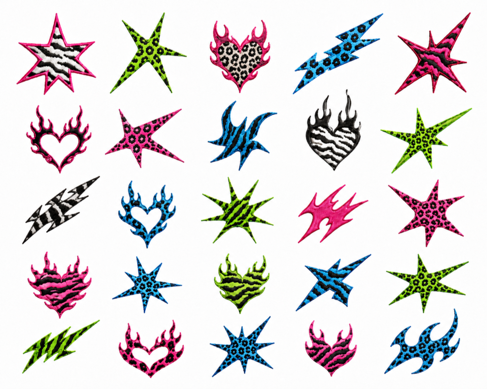
25 patches. 25 intentions. Infinite combinations. The shirt is the canvas. The patches are the language. What you choose to say is entirely up to you.
No permission required.
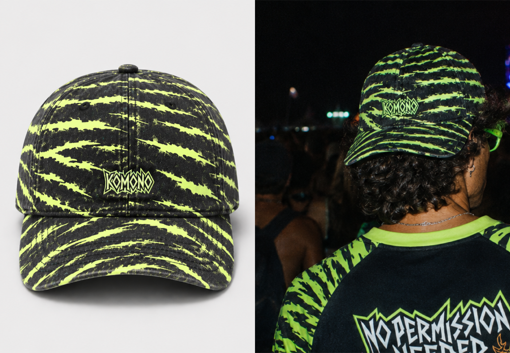
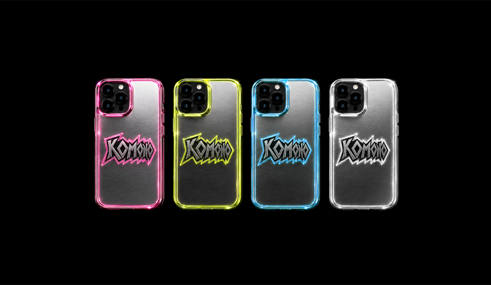
Introduce the campaign philosophy before revealing the collection. Plant a question the audience can't ignore.
WHO GAVE YOU PERMISSION?
The REVOLUTION PACK ships to press, creators, influencers, and community. The campaign becomes something people can hold.
Two mockups. One pack. Endless combinations.
The pack is made to be taken home. No deadline. No event required. People sit at their kitchen table, in their room, with scissors and stickers — and make something. A mini paper t-shirt. A mini paper pair of sunglasses. Both come with sticker sheets. Stick them up, cut them out, mix them together, photograph the result. Everything in the pack is a material, not an instruction.
The campaign happens in living rooms, not just at events.
That's the point.
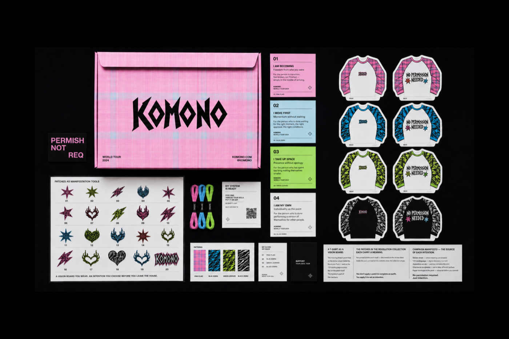
REVOLUTION PACKS arrive in-store. The campaign enters physical retail. KPI is participation, not sales.
The Grandma Station — in stores.
She personally presses shirts on the launch weekend. People who come to collect their pack meet her. The campaign's emotional core is present from day one in retail — not held back for the party.
Submissions appear in feeds. People share their in-store moment with the grandma. The community starts creating the campaign themselves. The brand steps back. People step forward.
Featured designs surface the people behind them. The community meets the creators. The party is announced.
"When did you stop asking for permission?"
The REVOLUTION PARTY. Outdoor. A beach or open-air location with a covered zone. Not a product launch, not a club night. A community gathering in a place that feels like it belongs to everyone.
She was in stores in March. Now she's here. People who met her then recognise her now. That continuity turns a character into a symbol. Every shirt ordered through the campaign passes through her hands.
Second appearance. Bigger stage.
Thousands of UGC pieces generated in a single night. The community becomes the campaign's content department. Maximum organic reach.
The campaign continues without budget. Winning designs release. People wear shirts they designed themselves. The movement becomes self-sustaining.
People wear shirts they designed. The shirts are walking content. The campaign has no clear end date.
No permission needed to continue.
A person can enter at any stage. The campaign is open at every door. The path moves them from observer to creator to community member — but it's never forced.
Street interview format. A simple question with no wrong answer. Real people, no influencers, no scripts. Every answer is a different definition of revolution — and every answer is the whole campaign.
One question. 15-second stories. Raw, personal, human. "When did you stop asking for permission?" People who designed their shirt become the natural cast — they're already invested. They're already part of the campaign.
When the campaign goes public, a dedicated online playground launches alongside it. Designed entirely in a Y2K aesthetic — the chaotic, personalised, hyperlinked visual language of the early web. Animated GIFs. Neon on black. Under-construction banners. Guestbooks. The whole era. It's not nostalgia for its own sake. It's the campaign's digital proof of concept: self-expression existed long before algorithms, long before brand guidelines, long before anyone asked for permission to build a website that looked exactly how they wanted it to look.
A digital version of the paper mockup. Drag and drop stickers onto a t-shirt template. Apply graphics. Mix and match. Screenshot and share. The physical pack and the digital playground mirror each other — same objects, different surface. People who never received a pack can still participate.
The REVOLUTION eyewear line available as a digital object. Choose your base frame, add charms, stack gems, attach pins. The same logic as the physical charm set, but playable instantly from any device. A preview before the real thing. A shareable image either way.
Every design created — whether from the physical pack or the digital playground — can be ordered directly. No competition. No jury. No waiting to be chosen. You design it, you order it, you wear it. KOMONO produces every shirt because that's the point: luxury self-expression, open to everyone. Online and offline participation are equal. No pack required.
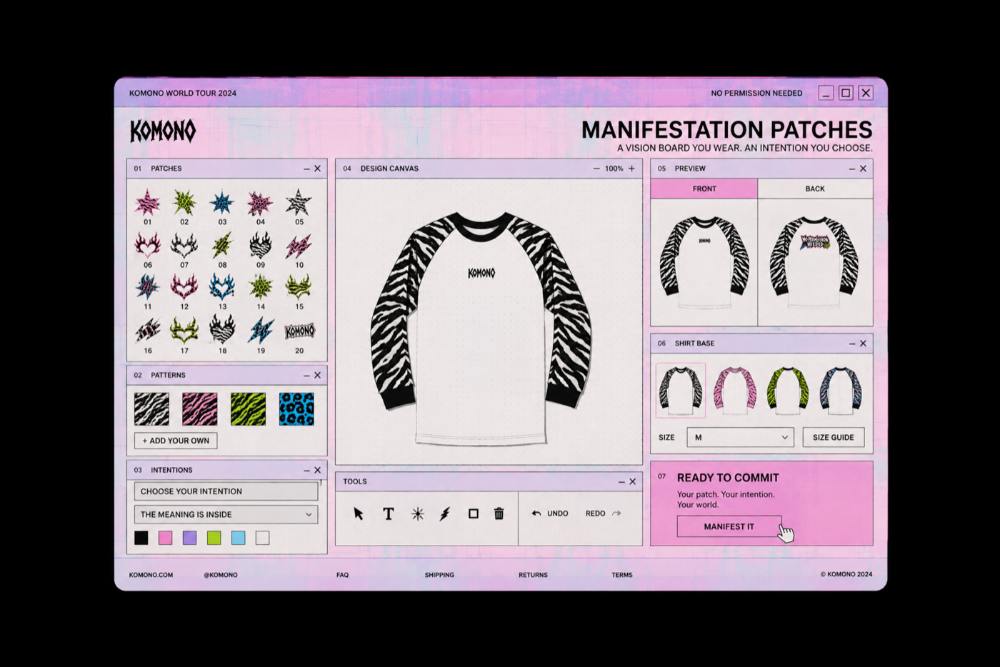
The Y2K aesthetic is not decoration. It is the argument. In 2000, anyone could build a site that looked exactly like themselves. That was the last time the internet felt genuinely personal. This campaign brings that energy back.
May 2027. Outdoor. A beach or open-air location with a covered zone. Not a club. Not a warehouse. A place that feels like it belongs to everyone who shows up — because it does.
Every KOMONO campaign launch has been defined as much by where it happened as by what happened. The location is not a backdrop — it becomes part of the campaign's identity. People remember the place. They reference it. The venue choice is a creative decision, not a logistical one.
REVOLUTION's outdoor setting continues that tradition while making the campaign's most important argument: this is not an exclusive event behind a guest list. The sky is the ceiling. The community is the guest list.
That's not a criticism. It's a cultural fact that most brands are still getting wrong in 2027. The millennial generation built nightlife culture — the dark room, the velvet rope, the DJ booth as status symbol. Gen Z rejected it. They go to markets, parks, outdoor festivals, rooftop gatherings, beach hang-outs. They want to see each other's faces. They want natural light in their photos. They want to leave when they want to leave. They want the air to feel free.
A club venue for this campaign would contradict every word of the manifesto. No permission needed — and yet you need to be on the list, you need to look a certain way, you need to survive the queue. An outdoor location removes all of that. It is the venue choice as campaign statement.
Authentic experiences photograph differently too. Golden hour light on the beach creates content no studio can replicate. The community portraits from this event will circulate for months because they look like real life, not a production.
Beach or open-air outdoor space as the main stage. The majority of the event lives outside — the DJ, the Grandma Station, the portrait studio, the photobooth. The covered zone handles what outdoor can't: the Customisation Lab, the production area, weather contingency, the quieter community spaces.
The covered area should not feel like a tent at a corporate event. It should feel like someone threw a tarpaulin over a creative space and filled it with people. The same DIY energy as the campaign itself.
Revolution Entry
Custom Ticket
She is not a prop. She is not irony. She is the campaign's most honest proof of concept.
The entire campaign asks one question: who gave you permission? She answers it without saying a word. Pink hair. Her own style. Her own terms. Nobody handed her permission to look the way she looks, to show up the way she shows up, to press shirts at a youth campaign at her age — she simply never asked for it. That is the campaign. That is the whole campaign, standing in front of you.
She works because she is the most unexpected version of the campaign's audience. Everyone who walks through the door is there to express themselves — and then they see her, and they realise the campaign was never about youth. It was never about a generation. It was about a decision. A decision anyone can make at any age. The moment people understand that, the campaign becomes bigger than a product launch.
She appears twice. First in-store during the March launch weekend, pressing shirts and meeting people picking up their packs. Then at the Revolution Party in May, as the emotional centrepiece of the night. The repetition builds her into a character. By the party, people who met her in March will point her out. People who didn't will ask who she is. Both conversations are exactly what the campaign needs.
She will be photographed thousands of times. She will be posted, shared, and remembered long after the event ends. Not because she was designed to go viral — but because she is genuinely, unmistakably herself. That is why she is an icon.
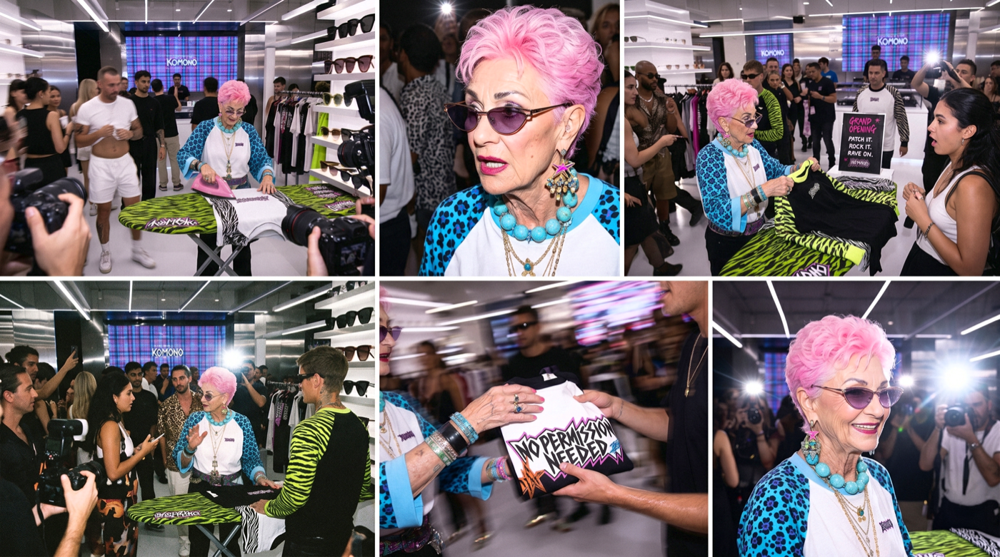
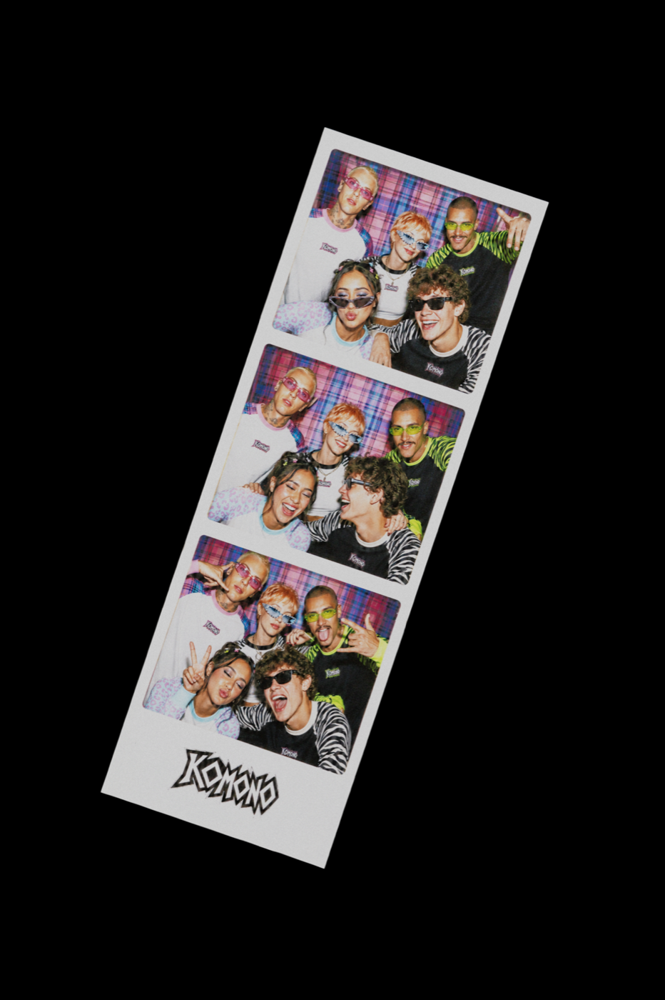
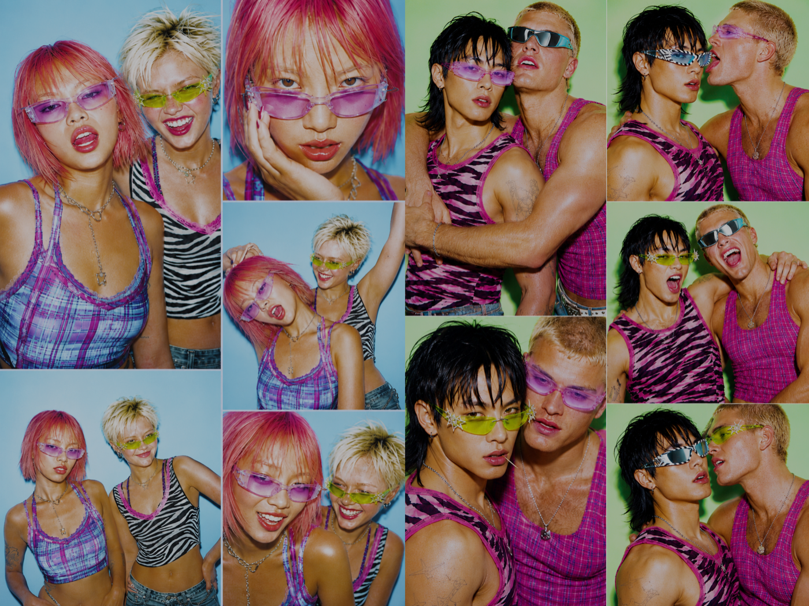
Each output has its own success signal. These aren't vanity metrics grouped by category — they're the specific numbers that tell us whether each activation did what it was supposed to do. Measured per output. Reported per phase.
Each phase has a content job. The timing isn't arbitrary — it's engineered so that each wave of content creates the appetite for the next. The street interviews build the question. The question makes the pack feel like an answer. The pack generates the submissions. The submissions fuel the event. The event creates the afterglow. Nothing drops randomly.
Plant the question before anyone knows what it belongs to. 3 weeks of intrigue, 1 week of identity reveal. Never explain — let people wonder.
PR drop week is the single most important content moment of the first half. Every piece of content this month exists to make the pack feel unmissable.
Retail goes live. Digital playground launches. Content job this month: make participation feel normal. Show people doing it, not just the invitation to do it.
Announce the event. Build personal anticipation. This month's content should make people feel like they know the community already — so attending feels like a reunion, not a cold room.
Event week is the campaign's peak. Content goes live in real time. Have 3 people posting throughout the day — one on stories, one on TikTok, one capturing for recap. Post within 6 hours of event ending.
Don't let the campaign die with the event. June's content job is to make people who weren't there wish they had been — and make people who were feel celebrated.
Budget calibrated for a smaller fashion brand — lean production, smart amplification, community-first spending. The biggest cost is the event in May. Everything else is kept tight and intentional.
Every deliverable across every category — brand, product, content, community, retail, digital, event, and advocacy. ✓ Completed. → Recommended addition. This is what a 360° campaign system looks like when it's fully built out.
The world doesn't become more beautiful when people fit in. The world becomes more beautiful when people become themselves.
NO PERMISSION NEEDED.